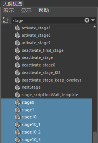
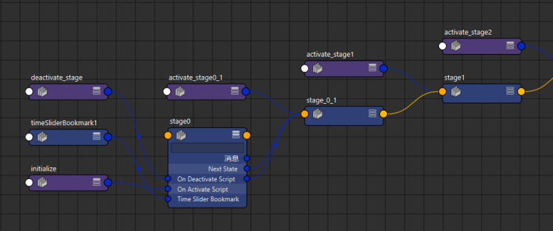

状态机最有用的应用之一是构建交互式教程。要开始构建，可以加载以下任一项：
- 位于内容浏览器中的 TutorialBuldingDemo 文件。
- 通过应用程序主页的“快速入门”(Getting Started)选项卡提供的交互式基础知识教程。
这两个文件的结构相似，因此无论您选择哪个文件，都可以通过执行以下操作快速开始：
查看状态机
- 在大纲视图中，关闭。
- 按“阶段”(stage)一词进行过滤。
- 选择所有阶段节点。
注： 除了阶段节点，还会有许多“activate_stage”节点。您不必担心这些。
- 打开。
- 单击“显示输入/输出”(Show Inputs/Outputs)按钮 (
 ) 以显示阶段节点及其连接。
) 以显示阶段节点及其连接。

此时，您可以看到教程阶段节点的结构。需要注意的一些重要事项包括：
- 激活脚本时(On Activate Script)：这是每个阶段的大部分工作发生时的脚本节点。可以在表达式编辑器中查看 Python 代码（请参见下文）。
- 取消激活脚本时(On Deactivate Script)：在此处连接一个脚本节点，以便在某个阶段完成后进行清理。尝试保持阶段逻辑独立，以便可以根据需要轻松移动或插入/删除它们，这是一个很好的做法。在上面的示例中，很明显在开发过程中，在 stage0 和 stage1 之间插入了 stage0_1。设计一个可供所有阶段节点使用的通用取消激活脚本也非常方便，让您可以简单地将所有“取消激活脚本时”(On Deactivate Script)属性连接到链中以提高可读性。
- 时间滑块书签(Time Slider Bookmark)：这在阶段开始时设置动画非常方便，但也可用于将场景状态从一个阶段更改为另一个阶段。例如，可以在书签开头为活动摄影机设置关键帧，使摄影机在阶段开始时跳转到场景中的不同位置。或者，可以为对象设置关键帧的可见性，使其在一个阶段中显示，但在另一个阶段中不显示。
- 阶段进展：根据阶段目标的不同，进入下一阶段的方式会有所不同。一些最常见的方式包括：
- 激活阶段的“条件”(Condition)属性或使用“-next”标志：如果需要在发生任何类型的事件时（例如，当用户单击自定义窗口或其他 UI 构件上的某个按钮时）触发下一个阶段，或者当它们满足某种条件时（例如，将对象移动到特定位置或打开特定编辑器），请使用此方法。在后一种情况下，可能需要将命令嵌入到 scriptJob 中，以便侦听这些事件。
- 激活阶段的“动画结束”(End of Animation)属性：用于简单地向用户演示某些内容的阶段。一旦时间滑块播放到末尾，下一个阶段将自动激活。
- 设置非零“延迟”(Delay)值：用于为阶段指定在自动进入下一个阶段之前的时间限制。如果要为用户指定在继续操作之前浏览的有限时间，则该选项非常有用。
- 在 UI 上显示二维文本或图像：这是为用户提供说明和提示的最佳方式。在上面的示例文件中，可以在以下脚本节点中找到覆盖源代码：
- overlayBubble
- overlayDialog
- controller
import moverlay moverlay.mayaDemo.demoOverlays()
您可以在安装目录的 /Python/Lib/site-packages/moverlay 文件夹中找到演示的源代码以及 moverlay 模块本身。有关二维叠加的详细信息，请参见显示二维叠加。
查看激活/取消激活脚本
阶段的大多数工作都在其连接的脚本节点中进行。在上述两个示例文件中，这些文件通常命名为“activate_stage#”或“deactivate_stage#”。还有许多辅助对象脚本未连接到阶段，但阶段通常会调用它们来执行一些常见任务。一些示例包括：
- overlayBubble：处理在屏幕上绘制词语气泡样式的叠加层。
- overlayDialog：处理在屏幕上绘制对话框样式的叠加层。与气泡不同，这些对话框可以移动和关闭。
- clearOverlays：删除所有气泡样式的叠加层。
- clearDialogs：删除所有对话框样式的叠加层。
- populateText：包含教程的所有文本的词典，可通过阶段名称引用该词典。
- updateController：刷新控制器的文本和可见性。
查看教程的所有脚本
- 打开。
- 单击。
- 在左上角的列中选择脚本以查看其内容。
为了方便起见，两个示例文件已完全添加注释和记录。